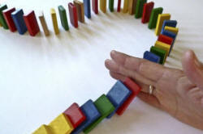

Language, Thought and Culture
|
Everything that we have so far
seen to be true of language points to the fact that it is
the most significant and colossal work that the human spirit
has evolved—nothing short of a finished form of expression
for all communicable experience. ... Language is the most
massive and inclusive art we know, a mountainous and
anonymous work of unconscious generations. |
Philosophy may seem somewhat removed from the day-to-day concerns
of language teachers. However, if you have ever been faced
with learners who simply cannot manage to grasp a concept in English
or you have encountered a concept in a language you are learning
which runs so counter to your own way of thinking that it seems
impossible to comprehend, you may not be alone in thinking that language
and mental processes, cognition, if you will, are intimately
connected.
That they are connected is not in much doubt, the uncertainty lies
in exactly how and to what extent they are connected.
If you have come here hoping for the definitive answer to that
question, you may well be disappointed.
 |
Two schools of thought |
There are two ways of looking at the connection between thought and language.
- Language determines thought. The language we speak and the concepts we are able to use to think about the world and those in it is the determining factor.
- Thought exists independently of language. Humans think and their ability to do so does not depend on the language they speak but is expressed separately in 'thought language', sometimes referred to as 'mentalese'.
Like most dichotomies, this one is quite possibly false. It is, however, a place to start. There are two outcomes for language teachers already.
- If hypothesis 1. is true, learning a new language means, in part at least, learning new ways to conceptualise the world and new ways to think. The more remote the language you are learning is from the structures, lexis and cultural background of your first language(s), the more difficult and extreme will be job of grasping new ways to think about the world.
- If hypothesis 2. is true, then both teachers and learners share a common way of thinking about the world which is independent of the languages they speak. All that is needed is to learn how to express universal thoughts in another language.
 |
The direction of causality |
As is often the case, there are proponents of both hypotheses
about the connection between conceptual categories and the
language(s) one speaks. Proponents tend, as is the way of
things, to be somewhat extreme, denying any internal and universal
grammatical and lexical systems on one hand (hypothesis 2.) or
averring that all thought is determined by language (hypothesis 1.).
The issue can be summarised as either:
- The structure of human thought determines how a language
develops and is structured
or - The structure of language determines human thought
You don't have to choose. It may be the case that both hypotheses are correct. On one hand there are universals of thought that determine, e.g., that all languages distinguish between noun and verb phrases and so on and that any language which evolves determines the way people think about the world and that, in turn, determines how they can think about the world.
Theorists |
Theorists fall into two main camps:
- Those who accept that language wholly or partially determines how we think: no language = no thought
- Those who see language as emerging from the basic structures of the human mind: language structure = inherent mental structure.
They cannot both be right. Here are some ideas from both camps, divided into the lingualists who take a language-first view of human thought and the cognitivists (often simply termed Chomskyists) who take the second view.
- Language determines thought
- The Sapir-Whorf hypothesis. This is something of a misnomer
in that Edward Sapir and Benjamin Whorf did not collaborate on
any publication and were not working together. The hypothesis
was named by a student of Sapir.
One quotation will suffice to get a feeling for what was said:We dissect nature along lines laid down by our native language. The categories and types that we isolate from the world of phenomena we do not find there because they stare every observer in the face; on the contrary, the world is presented in a kaleidoscope flux of impressions which has to be organized by our minds—and this means largely by the linguistic systems of our minds. We cut nature up, organize it into concepts, and ascribe significances as we do, largely because we are parties to an agreement to organize it in this way—an agreement that holds throughout our speech community and is codified in the patterns of our language.
Whorf and Carroll, 1956:213 - Vygotsky:
Lev Vygotsky was an early advocate of language determining thought. Here's what he said:Thought is not merely expressed in words; it comes into existence through them.
Vygotsky, 1986:214
Consciousness is reflected in a word as the sun in a drop of water. A word relates to consciousness as a living cell relates to a whole organism, as an atom relates to the universe. A word is a microcosm of human consciousness.
Op cit.:256 - Other writers:
Others, non-professional linguists for the most part, have had similar thoughts on the topic. Here's a bit from Percy Bysshe Shelley in Prometheus Unbound:
He gave man speech, and speech created thought, Which is the measure of the universe
Sapir and Whorf were not, of course, the first to make a connection between language and thought, the first determining the second. They were following a long tradition. Herbert von Humboldt, a German Romantic philosopher stated in 1820 that:
The diversity of languages is not a diversity of signs and sounds but a diversity of views of the world.
but this was in an effort to assert that western languages were superior and that led to a superior social condition. - Ubiquity:
There are many, usually not professional or informed linguists for whom the connection between thought and language appears so obvious that no support for the theory is offered. The literature, both lay and academic, it littered with assumptions such asEach language is a way of thinking, expressing and perceiving the world.
(Parara, 2021)
- The Sapir-Whorf hypothesis. This is something of a misnomer
in that Edward Sapir and Benjamin Whorf did not collaborate on
any publication and were not working together. The hypothesis
was named by a student of Sapir.
- Thought
determines language
- Chomsky was a very influential thinker who asserted (among much
else) that language and language structure springs from the innate,
biologically determined nature of the human mind. In this view, the
nature of language is dependent on the inherent structure of the
mind. Hence, the positing of a universal grammar which encompasses
all human languages and grows out of the structure of the mind.
In that we have deliberately used the word human to classify language. It is interesting to speculate what a non-human language might be like. There's an article on this site doing just that. Get it here. - Stephen Pinker is another influential thinker in the same school and
he stated:
The idea that thought is the same thing as language is an example of what can be called a conventional absurdity: a statement that goes against all common sense but that everyone believes because they dimly recall having heard it somewhere and because it is so pregnant with implications.
Earlier in the same text, he has:
Pinker, 2007:58-59there is no scientific evidence that languages dramatically shape their speakers' ways of thinking. ... The idea that language shapes thinking seemed plausible when scientists were in the dark about how thinking works or even how to study it. Now that cognitive scientists know how to think about thinking, there is less of a temptation to equate it with language just because words are more palpable than thoughts. By understanding why linguistic determinism is wrong, we will be in a better position to understand how language itself works
Elsewhere (p82), Pinker puts the argument for mentalese, this way:
Op Cit.:57Knowing a language, then, is knowing how to translate mentalese into strings of words and vice versa.
The counter argument is that some languages do not have what many would consider really fundamental categories such as blue, leg, if and here.
- Chomsky was a very influential thinker who asserted (among much
else) that language and language structure springs from the innate,
biologically determined nature of the human mind. In this view, the
nature of language is dependent on the inherent structure of the
mind. Hence, the positing of a universal grammar which encompasses
all human languages and grows out of the structure of the mind.
The two standpoints outlined here are not merely of theoretical
interest. In particular, many of the arguments around the use
of what is called gendered language in English start from an a
priori assumption that the structures of a language affect how
people think about male and female social roles and, moreover, that
it is possible to change how people think by reforming the language
they are compelled to use.
There is a guide on this site, linked below, to how languages handle
gender marking.
A further consideration concerns the sociolinguistic concepts of restricted and elaborated codes. These concepts of we owe to Bernstein (1971), who identified two varieties of language available to its speakers:
- Elaborated code is used most frequently in formal situations
and contains:
- a high proportion of subordinate clauses, using, for
example, conjunctions such as although, so, because, in
order to and conjuncts such as accordingly,
subsequently, therefore etc.
The use of such devices is generally terms hypotaxis (from the Greek meaning to arrange below). - passive verb clauses using, for example:
She was arrested
instead of
The police took her away - longer and more unusual adjective phrases such as the ancient, British people, a difficult but important issue etc.
- less common adverbs, adverb phrases and adverbials such as regrettably, to my astonishment, not wholly surprisingly, without much difficulty etc.
- the use of abstract nominalisation such as creation, emergency, issues, calculations and so on.
- a high proportion of subordinate clauses, using, for
example, conjunctions such as although, so, because, in
order to and conjuncts such as accordingly,
subsequently, therefore etc.
- Restricted code is used in less formal settings and is
characterised by:
- The use of simpler, and often repeated coordinating
rather than subordinating conjunctions such as and,
then, but etc and conjuncts such as first, next,
later etc.
This is often referred to as the use of parataxis (from the Greek meaning to arrange side by side). - The avoidance of passive structures and a consequent increase in the use of subject pronouns such as he, she, they etc.
- The use of tag questions to elicit agreement such as wouldn't they?, didn't we? etc.
- Simple adjectives and the avoidance of long adjective phrases so we find more occurrences of, e.g., nice, lovely, pretty, good, bad etc. rather than pleasing, beautiful, stunning, acceptable, disrespectful etc.
- the use of a greater number of concrete nominalisations such as road, car, house, room etc.
- The use of simpler, and often repeated coordinating
rather than subordinating conjunctions such as and,
then, but etc and conjuncts such as first, next,
later etc.
More controversially, Bernstein and others have proposed that the
ability to use either code depending on the appropriacy of the
setting and the needs of the moment is restricted to middle-class
children whereas working-class children are confined in general to
the use of restricted code and are therefore educationally and
career-wise disadvantaged because elaborated code structures and
lexis are required to encode complex relationships. In that
view, working-class children suffer from cognitive deficiency
because they are unable to think about more abstract and difficult
ideas.
This is a view most strongly held by those who believe that thought
is dependent on language but on that hypothesis, the jury is still
considering its verdict.
This assertion has been disputed by, e.g., Labov, who presented
evidence that even in restricted code the encoding of complex and
subtle ideas is perfectly possible, indeed, routinely achieved and
no cognitive deficiency can be identified. In this view,
elaborated code use is simply a social convention and has nothing to
do with restrictions in cognitive abilities.
It will not have escaped your notice the the characteristics of
restricted code are often noticeable in the speech of learners of
English.
Culture: a third possibility (or an added complication) |
To add to the mix, many theorists claim that the
environment in which a language is born, evolves and changes is
determined by the cultural needs of the speakers. This is
particularly, but not solely, relevant to the study of lexis.
The theory here is that a language evolves and adapts to the
exigencies of the environment and culture in which it has developed
and encodes not all possible thought but those which its speakers
need to survive and prosper. Changes in location and ways of
surviving will be mirrored in changes in the language.
Here are five areas where there is evidence of the truth of this
proposition.
 |
Kinship |
If you are born into a culture in which kinship relationships are particularly important, it will be unsurprising if your first language has an elaborate and complex way of expressing familial relationships. For example:
- In English a distinction is made between siblings and
cousins so the children of one's mother's siblings or father's
siblings,
of either sex, are distinguished lexically from the children of
one's parents. Hence we distinguish between brother,
sister and cousin. Hawaiian, on the other hand, does not make
this distinction so brothers and sisters are referred to in the
same way as cousins. English does not distinguish between
male and female cousins but, for example, German and other
Germanic languages do, so the German for a female cousin (die Kusine) and a male cousin (der Vetter) may be used.
Other languages do things differently and Sudanese, for example, makes distinctions between the children of one's mother's sister, one's mother's brother, one's father's sister and one's father's brother, producing a four-way distinction not seen in many languages. - English has only one word for a male sibling, brother, but other languages, including Kannada, Telugu, Tamil, Turkish, Sinhalese, Chinese languages, Japanese, Korean, Vietnamese, Tagalog, Hungarian, Bulgarian, Nepalese, and more distinguish between older and younger brothers or sisters, having different terms to refer to each.
- English uses the catchall term nephew to refer to any male child of a sibling and does not distinguish between blood relationships and relationships by marriage in this respect or between the sexes of the sibling parent. So, in English, a nephew may be the son of your sister or the son of your brother or the son of the spouse of either of them. Other languages may make distinctions between the children of one's sister or brother and between nephews who are older than oneself or younger.
-
Tamil, an ancient South Indian language has specific kinship
terms rendered by only two lexemes in English:
aunt: chitthi (mother's younger sister), periyamma (mother's elder sister), mami (uncle’s wife).
uncle: chithappa (father's younger brother), periyappa (father's elder brother). - Other languages may be even less informative than English. Some Hawaiian languages, for example, do not distinguish between sibling and cousin at all.
Although all languages are capable in theory of expressing any thought, the constraints produced by language in terms of kinship are clear. Most speakers of English, for example, are unconcerned whether someone's sister is older or younger than the person in question but this is clearly significant information in other cultures and reflected in the language forms.
Animals |
Evidence for culturally determined names for animals comes preponderantly from languages spoken is societies which continue to have or had a strong relationship with nature and animal husbandry.
- Harrison (2007:30), for example, reports that some languages (such as those spoken in Siberia and northern Finland) may have as many a ten distinct words to describe reindeer at various stages of development and age as well as indicating their usefulness as riding animals, studs or their mating characteristics.
- The language ||Gana (the double bar denotes a click sound), spoken in Botswana, does not distinguish between plants and animals at all and, instead, has three broad categories: edible, harmful and those which are useless (being neither edible nor harmful) (Op cit:39).
- English and many other languages
share a categorisation into plants and animals because that is
useful in the cultures in which the languages developed and,
despite evidence from biological sciences to the contrary, the
distinction is adhered to by most speakers of these languages.
In fact, the actual genetic relationships reveal a fourfold
distinction between animals, fungi, slime moulds and plants.
The latter distinctions may be more scientifically accurate but
the former, folk taxonomy is more useful for day-to-day
purposes.
It is also the case that English and thousands of other languages distinguish three kinds of animals: mammals, birds and reptiles but this, too, is inaccurate folk taxonomy. The real distinction should show a major split between animals and reptiles with turtles, lizards and birds forming sub-categories of reptiles. Everyday experience, however, does not lead most people to refer to birds as reptiles (or dinosaurs). - People whose habitat and culture are deeply reliant on seafood and fishing will often refer to fish not by appearance (as many languages do) but by habitat, method of trapping and usefulness as food.
- People living in tropical rainforests in, e.g., in Venezuela, may have as many as 17,000 words to describe elements of the world around them, most of which cannot be translated easily into any other than a local indigenous language.
- Even English, when it matters, has extensive words for animals above and beyond those used by ignorant town dwellers. For example, most English speakers can distinguish between sheep, ewe, lamb and ram but few would be able to define wether, tup, hogget, shearling, gimmer, theave or teg, because they don't need to do that.
Again, the conclusion has been reached by some that the language
a speech community uses develops to include concepts which are
important at the time and loses those which are less significant as
social changes come into effect.
Unless one is a horse breeder it is unlikely in modern
English-speaking settings that there is a need to distinguish
between colt to describe a young male horses, foal
for a horse of either sex under one year old, a yearling, a
filly, a mare, a stallion or a
gelding.
Such was not the case, arguably, before the advent of transport
systems unreliant on horses.
 |
Maps in the mind |
This does not refer to the way that people draw complex diagrams
as a way of understanding and remembering facts. It is to do
with how we conceptualise distances, relative positions and
directions of travel. In other words, we are considering maps
in the mind.
Here are some examples:
- In the majority of cultures, distance
is measured in a linear fashion (in miles, chains, rods,
furlongs, kilometres, leagues, verst
etc.) but in the languages of people who live in unforgiving and
rugged landscapes, distances may be measured in the amount of
time and effort it takes to get from A to B, not in how far they
are apart.
For example Sherpa speakers in Nepal are more interested in the vertical distance between places than the horizontal because that better describes the time and effort needed to travel between them. Words in such languages do not readily translate into the linear concepts used by other languages. - In some languages, rather than using speaker-centric views of place such as behind, left, right, in front etc., speakers will adopt objective measures corresponding to compass points (north, west etc.), points relative to wind directions or whether the speaker is referring to movement towards or away from land, upstream on a river or down.
- Even a simple verb such as go
may have various renditions depending on the speakers' view of
the action. A Vanuatuan language, for example, has three
forms of the verb depending on whether one is travelling by boat
or on land, towards or away from the sea, upwards or downwards.
Additionally, suffixation is used to denote both direction and
destination, resulting in no fewer than nine alternative
renditions of the verbs go and come.
Before using either verb, speakers need to consider a range of
factors unknown to speakers of many other languages.
Tuvan, a Siberian language, selects from five possible words for go dependent on whether one is ascending or descending, going up- or down-stream, on foot or on horseback.
Even in modern German, there is a distinction between the concept of travelling by vehicle (fahren) or on foot (gehen) which is absent in English. Speakers of English use the verb go for either mode of transport and reserve the verb drive for the specific activity of controlling a vehicle. So, for example, in German:
I'm going to the shops
implies walking but in English it does not. - Strikingly, cultural demands in living in large and
inhospitable landscapes have, it seems, provided the people who
live there with enhanced orientation
skills (Harrison, op cit:131). He goes on to
discuss the ways in which speakers of some languages are able
to locate themselves and well-known (but invisible) landmarks
with extraordinary precision and accuracy whereas speakers of
English and many other languages become disoriented and lost within a matter of a few
hundred yards into unknown territory.
If this is true, far from mental images being expressed in language or language determining mental images, the effect of culture and the language which arose to operate within it has been to change cognitive processes directly. All the examples above imply that before a speaker of a language can use concepts such as these he or she is forced to consider a range of different variables.
If, as some assert, thought is independent of language, it becomes difficult to reconcile how different ways of expressing simple concepts have originated and persist.
 |
Counting |
There is some agreement that humans have an innate number sense.
Evidence for this is the fact that even very small babies show
surprise when two puppets are shown, another added and then only one
is revealed at the end, running counter to the assumption that 2 + 1
= 3.
Most large, especially western, languages use a base 10 to calculate
so, for example, 9 + 3 is determined as 10 + 2 or 12.
(Non-mathematicians may like to know that most of us count in base
10 which means simply that as soon as one gets above 9, it is
necessary to shift to the next unit up and begin again from 1.
Hence, 8 + 8 is perceived as 8 + 2, making 10 and then the remainder
(6) being placed in the empty column resulting in 16. If
people had 6 rather than 10 fingers we might use base 6, in which
case 8 would be express as 12 (we have filled the left-hand slot
when we get to 6 and placed a 1 in the left-hand slot and the
remainder (2) in the right-hand slot. So the sum 8 + 8 will be
the same as imagining 12 + 12 and the result will be 24.
As it turns out, this is not just an exercise in mathematics because
some Niger-Congo languages and some from Papua New Guinea do, in
fact, have base-6 mathematics systems.
Those old enough to remember the time when a shilling in Britain
(and elsewhere) was divided into 12 pennies will be familiar with
base-12 mathematics in which, for example, a sum such as:
Add 1 shilling and 10 pence to 2 shillings and 4 pence (in
old notation, 1s.10d + 2s.4d)
means filling the first, right-hand slot when 12 is reached and
placing 1 in the next slot to the left so we get:
3 shillings (1 + 2)
plus 14 pence (10 + 4) = 1 shilling (12 pence) and a
remainder of 2 pence
add 1 more shilling to the left-hand slot
place the 2 pence in the right-hand slot
The answer is, therefore, 4 shillings (the original 1 + 2 with the
extra 1) and the remainder (2 pence). 4 shillings and 2 pence.
That would have been written as 4/2 or 4s.2d.)
There are other possibilities and evidence for the effects of language on mathematical ability:
- A Californian indigenous language,
Yuke, counts in base 4 because speakers use the gaps between the
fingers rather than the tips of the fingers to calculate while a
New Guinean language, Arapesh uses base 6, counting all the
fingers, the thumb and the thumb joint. Base 20 systems
are widely reported in which, e.g., 63 is expressed as three
x base + 3 whereas in English and most languages it is
expressed as 6 x base (60) + 3.
If this is true, far from mental images being expressed in language or language determining mental images, the effect of culture and the language which arose to operate within it has been to change cognitive processes directly.
It is common for the word hand to denote the integer 5. - Most languages use a simple multiplication or addition system for larger numbers, so we get, e.g., 37 expressed as 3 x 10 + 7, but not all do so. Some languages use a system of over-counting which visualises where on the way from the last set of 10we are on the way to the next. For example, the number 22 may be expressed as two towards 30.
- Many large languages, including Cantonese and Japanese have complex sets of classifiers obliging their speakers to consider what it they are counting before they can even begin. The numerals used to count people may differ, therefore, from the numerals used to count books.
- One language, Aiome (a Ramu language of Papua New Guinea), uses only the numbers one and two so 4 is expressed as two and two and 5 as two and two and one, for example. Speakers of such languages would find it cumbersome and possibly impossible to deal with numbers higher than around 10. The argument is that if the culture required them to do so, the language would adapt to allow it.
- There is some evidence, reported in
Harrison, op cit.:190, that children whose languages are
explicit about the way bases work in mathematics such as
Mandarin and Welsh are quicker to grasp the essence of base-10
computing than those whose languages are more obscure in this
respect, such as English. In English, a number like
thirty-five does not state what base is being used but
expressing the number as three-tens and five would make
the base explicit and, the argument goes, allow speakers better
access to the mathematical concept. That is exactly what
happens in Modern Welsh, Japanese, Korean and Chinese languages
is which the base is made explicit so 47 is expressed as
four-ten-seven) and there is evidence from other studies
(e.g., Miura et al., 2016) that children whose first
language make the base explicit (Japanese and Korean in this
case) may perform better at tasks requiring them to identify
place values.
Another study (Dowker and Roberts, 2015) showed that children taught mathematics in Welsh (which, in its modern form has a transparent counting system, unlike English) performed better at place-value tasks, especially for numbers over 20.
Their conclusion was that:
... the regularity and transparency of the Welsh counting system may help children not only in learning the correspondence between written and oral representations of number but also in the development of non-verbal numerical magnitude representations. - English happens to use an addition system that works by adding the smaller number before the larger so we get, e.g. nineteen to represent 9 + 10 [teen]. Other languages, such as Spanish and Greek, do the reverse and add the smaller number after the larger so 19 becomes diecinueve or δεκαεννέα [dekaennaya], for example, or ten-nine. Doing the work this way makes the base (10) explicit.
- The base of 10 used to be made explicit in most Germanic languages such as English so, for example, the terms eleven and twelve are derived respectively from the Old English enleofan and twelf which mean respectively, one left and two left (i.e., having subtracted the base 10). Old Norse, Old German and a range of other languages had similar terms. Lithuanian (not a Germanic language) also retains this system using it for all numbers up to 19.
- Roman numerals work in the opposite way (one reason why they
are cumbersome for mathematics of even the simplest sort).
In that system, originally, the numbers up to 4 were expressed a
i, ii, iii, iiii and 5 was v with vi as 6, vii as 7, viii as 8
viiii as 9 until we get to x for 10. Only later was the
complication of reversing the mathematics and subtracting the
first symbol from the second resulting in iv for the old iiii
and ix for the old viiii. (The mental image requires the
understanding to be 1 before 5 and 1 before 10 respectively.)
The number 29 is therefore expressed in Latin numerals as xxix
meaning 10 + 10 + (10-1) = 29.
To cut down on the cumbersomeness of the system, it was necessary to invent symbols for 50 (L), 100 (C), 500 (D) and 1000 (M). This still makes things difficult as a number such as 2,754 has to be written as MMDCCLIV and higher numbers, e.g., 27,548 become almost impossible to express.
Because the Roman system was in use in Europe long after the demise of the Roman Empire, this awkwardness was overcome by a very complex system of place bars over symbols to represent multiples of 1000 thereof so, for example:
and so on. There has been some speculation that this numeral system held back western science and thinking by many hundreds of years because of its inability to handle large numbers.IV = 4 IV = 4000 XXV = 25 XXV = 25,000
The Roman system also had no concept of the zero and that was not introduced into European thinking until the 12th century. It was many hundreds of years later before it was in common use. The inability to express the concept in words or numerals arguably disabled European mathematical thought for nearly 1000 years.
According to the Merriam-Webster Dictionary, the first use of the word zero was in 1598.
If you have no word for 0, perhaps you have no way of thinking about 0. - Many languages (but not all) use a multiplication system,
too, taking the base, multiplying by the appropriate number and
then adding the smaller number so, e.g., in English 45 is
expressed as (4 x 10) + 5 (forty-five). Other
Germanic languages, Dutch and German, for example, see things
slightly differently and render 45 as 4 + (4 x 10) (vyf en
veertig in Dutch) and 93 as dreiundneunzig
(German).
French mixes systems and reverts to a base 20 for numbers above 79 and then adds in the numbers above 10 to get to, e.g. quatre-vingt-dix-sept (97) which is (4 x 20) + (10 + 7). - The Pirahã language of Brazil has often been cited as evidence of the effect of language on thought. The language has no terms at all for numbers higher than 3 and the existence of even terms for one and two is in doubt. Consequently, it is asserted, speakers of the language are unable to carry out quite simple mathematical procedures such as taking 6 away from 10.
Counting systems would, on the face of it, provide strong
evidence for the way in which linguistic constraints impact the
ability to think in certain ways.
It has been averred, for example, that children educated in Britain
prior to the decimalisation of the currency in 1971 were more
comfortable operating in base 12 (pennies in a shilling) and base 20
(shillings in a pound) and would find adding 7 shillings and 10
pence to 3 pounds, 15 shillings and 4 pence quite a simple task
beyond similar children used only to dealing with base 10
mathematics. (The answer = 4 pounds, 3 shillings and 2 pence,
or £4.3s.2d, by the way.)
Even today, British people are probably more comfortable operating
in base 3 (feet and yards) and some to working with base 16 (ounces
and pounds) than others from base-10 measuring systems. This
is, arguably, an effect of language on thought.
Keeping track of time |
Humans have developed ways of keeping track of time for at least 40,000 years and quite likely longer. How they have done it varies from time to time and culture to culture and this may influence how people perceive time and how they cut it up into manageable chunks. That, of course, will have implications for things like tense structures and other ways in which verb forms express time.
people in different cultures or groups have
been shown to differ in whether they think of time as stationary or
moving, limited or open-ended, horizontal or vertical, oriented from
left to right, right to left, front to back, back to front, east to
west, and so on.
Fuhrman, et al, 2011:1306
- English and many other European languages views time
horizontally as if it were moving from behind us to in front of
us. In English, this generates expressions such as:
I'm behind time
I'm looking forward to seeing you
Let's work on until the end of the day
We've put the argument behind us
Thinking back, I see you are right
etc.
Other languages, such as Mandarin, view time vertically: meaning that its speakers perceive time as moving from above to below us. This generates, roughly translated, expressions such as:
The up month (instead of the next month)
The down semester (instead of the last semester)
and so on.
Fuhrman et al conclude (op cit.:1325):
It appears that patterns in language and culture can induce differences in thought in even such fundamental conceptual domains as time. - English and many other languages, such as Swedish and German view time
in terms of distance so we have expressions such as:
a long time
a short pause
a lengthy job
etc., all of which can be translated directly.
But there is evidence that other languages, such as Greek and Spanish, view time in terms of size so the equivalent expressions would be
a big time
a small pause
a large job
etc.
It demands an effort of will to begin to think of time as proceeding from left to right and in terms of length rather than size. Trying to do both of these things if your first language does neither is truly challenging. - Not all languages have a tense distinctions in the way verbs are used, relying instead on adverbials and aspect markers to conceptualise time. Most Chinese languages fall into this bracket and speakers may struggle to see how indications of time need to be expressed through changes to verb forms.
- Some languages, such as French and other Romance languages, distinguish between a past incomplete event (the imperfective) and a past complete event (the perfective) which English and many other Germanic languages do not do.
- English has two fundamental tense types not recognised in many other languages: relative and absolute tenses. English distinguishes relative or relational tense forms, such as the present perfect and the past perfect which link two events in time (the present to the past and the past to a time before the past, respectively) from absolute tenses such as the past simple and future with will which set events at particular times independently of other events.. Other languages may rely solely on absolute tense forms and their speakers will struggle to conceptualise relative aspects of tenses.
- Some languages reserve certain tense forms for today only and have separate verb forms for times after and before today.
- Some languages (such as Italian) distinguish between the recent and distant past.
- Today, most cultures around the world have adopted the
modern second, minute, hour (all base 60), day (base 24), week
(base 7), month (base 12) and year of 364.25 days (roughly) but that is
not the only way to reckon time and many indigenous languages
still rely on more mobile units, such as a set of four to nine
days centred around today or a lunar cycle of 13 months in a
year.
Even English and many other western languages actually does not have a single word to denote a period of 24 hours because the sense of day includes the sense of light. Hence, of course, during the day does not include the night but two days from now is 48 hours, not just two periods of daylight.
Grasping the ways in which the language you are learning divides
time and sets events and states in time past, present or future is
not easy. It often requires a different way to conceptualise
events and states.
The problems that many learners encounter with English temporal
concepts often arise from the ways in which aspect and relative
forms are used in English. This is especially true for
speakers of languages which do not focus at all on aspect and rely
entirely on context and co-text to signal perfect, progressive,
iterative and other aspects.
|  |
Implications |
It was argued at the outset that the hypotheses one accepts will
affect how one views the process of acquiring or learning a new
language. It is either learning how to express universal ideas
in a new language or it is a process of learning to think in new
ways because the language one is learning deals differently with the
world.
It need not be dichotomised in such simple terms, fond as theorists
are of creating unsustainable either-or distinctions.
The extreme form of the Sapir-Whorf hypothesis has probably been
abandoned for good but the jury is still out on whether and to what
extent language exerts constraints on the ways in which the people
who speak them think. Despite Pinker's dismissal of the
Sapir-Whorf hypothesis as "wrong, all wrong" (op cit:57), there is
evidence, not least from the sadly diminishing number of indigenous
languages around the world, that the ways one's language encapsulates
real-world states and events really does enhance or diminish one's
ability to do certain types of thinking.
One alternative view is that languages reflect the things that their
speakers need to talk about and as new needs arise, language alters
to allow speech to reflect a changed reality.
Here are some examples of some serious implications for language learning and using:
- Terminology
If, for example, my language can encode a male domesticated reindeer in its third year and first mating season, but not yet ready for mating in a single word, döngür, as the Tofa language of Siberia allows me to do (Harrison, op cit:57), do I have a better way to think about reindeer of this sort than the clumsy circumlocution in English does not allow?
On the other hand, if my language lacks a way of expressing numbers above 10 (or in extreme cases, numbers greater than two) is my ability to do mathematics severely limited by the fact? If language affects mathematical abilities across cultures, it must be because we have learned it that way, not because language ability is innate. - Concepts
One of the most difficult systems for speakers of some languages to acquire in English is, notoriously, the article system. Those who suggest language and thought are separate domains would aver that this is simply because the system is difficult to learn yet speakers of, e.g., German have far fewer difficulties than speakers of Russian. Those who see clear connections between language and thought might respond that it is precisely because some languages do not require a speaker to consider the notions of specificity and indefiniteness that lie at the heart of the English article meaning system so they need to learn to think differently about the world to get it right. That is not easy. - Classification
In a connected domain, it is difficult for English speakers to acquire the complex system of classifiers that exist in many languages simply because English speakers are not habituated to think about the physical and social characteristics of what they are counting when they say, e.g., ten people or ten tables.
On the other hand, English partitive expressions such:
a rasher of bacon
a slice of bread
a grain of sand
a speck of dust
a heap of work
etc.
become more accessible to speakers whose languages classify extensively. - Number and case
If your language demands that you consider the number of a noun and its function grammatically in a clause (as subject, object, addressee, location etc.) before you select the right forms, you are obliged to consider the world very differently from someone whose language demands no such choices.
The misuse of pronouns is an obvious consequence as is the loss of focus on word ordering which, in a language such as English, often determines which is the subject and which the object of a verb. - Countability
If, as in English, you are required to consider whether a noun is to be understood as a mass concept or a countable one before you can select the correct determiner (e.g., a few vs. a little) you will have difficulties doing so if your own language makes no such distinction. - Gender
Many languages have gender systems which often determine how other structures agree with the noun in question. French has two and these are reflected, for example, in adjective endings and the forms of determiners such as the articles. Some languages have as many as five or more separate genders and not all distinguish masculine from feminine from neuter. There is some evidence that languages such as French and German that arbitrarily classify, e.g., the noun fork as feminine will apply adjectives to an example of it differently from those whose languages make it masculine or genderless (Spanish and English, for example).
Referring to a fork as she is a natural consequence of thinking of it as feminine and, maybe, calling the moon handsome rather than beautiful may be another consequence of referring to it as masculine. - Metaphor
Some metaphorical uses in English are so common as to pass almost unnoticed but there is ample evidence that parallel notions are not universal in all languages. English, for example, often equates:
argument with warfare so we:
shoot down arguments
attack weaknesses
defend ideas
etc.
life with a journey so we:
are on the road to success
getting on with life
making onward progress
etc.
For more in this area, see the guide to synonymy and related concepts, linked below.
On the other hand, there is ample evidence to suggest that humans are genetically equipped to learn language (any language) and that babies do not learn by imitation or trial and error alone. Word and phrase categories are often cited in this respect as elements of a universal grammar and the notions of noun phrase, verb phrase and so on are probably truly universal. However, some languages (such as Moken, an Austronesian language) seem to get by happily without anything like an adjective phrase as speakers of other languages would understand the item.
 |
In the classroom |
What if all the hypotheses are right (or none of them)? Because the jury is still out (and may remain so for some time) when trying to reach a verdict on whether:
- Language determines thought
- Language influences thought
- Thought determines language
- Language categories and forms are innate
- Languages share a common universal grammar
and allied questions, it would be perilous to ignore the classroom consequences.
- If hypothesis a. is correct, we need to do more than concept check (because checking a concept your learners do not have and can probably only grasp with a great deal of effort and exposure is possibly futile). It seems sensible to suggest, instead, that we supply a great deal of real-life communicative practice to help our learners internalise concepts that are outside their current mental schemata.
- If this weaker form, hypothesis b. is correct, then the same considerations apply but concept checking becomes more valuable because an influence, however strong, can be overcome with some effort and application in a way that a truly determining factor cannot.
- If hypotheses c., d. and e. are correct (even partially), then we need to single out the innate categories of universal grammar and the human-wide ways of conceptualising the universe for special attention. This may mean, for example, focusing on the universal concepts of verb, noun, preposition and adjective phrases (unless, of course, one's learners happen to be speakers of languages like Moken which does not have the last of these).
- If hypothesis e. is correct then Pinker is right when he
states, following Chomsky:
According to Chomsky, a visiting Martian scientist would surely conclude that aside from their mutually unintelligible vocabularies, Earthlings speak a single language
However, studies in comparative linguistics reveal that the existence of language universals is questionable.
Op cit: 232
Evans & Levinson put it this way:Languages are much more diverse in structure than cognitive scientists generally appreciate. A widespread assumption among cognitive scientists, growing out of the generative tradition in linguistics, is that all languages are English-like, but with different sound systems and vocabularies. The true picture is very different: languages differ so fundamentally from one another at every level of description (sound, grammar, lexicon, meaning) that it is very hard to find any single structural property they share. The claims of Universal Grammar, we will argue, are either empirically false, unfalsifiable, or misleading in that they refer to tendencies rather than strict universals.
Evans & Levinson, 2009:2
 |
Choices |
So, is it a matter of Take your pick?
To some extent, yes. If, for example
- You are teaching a multilingual group of learners whose first languages are very diverse, you may well take the view that focusing on language difference will only be partially relevant part of the time. In this case, you may be better advised to focus on elements of supposedly universal grammar which you believe will be commonalities in the group. That will include, inter alia, a focus on word and phrase class, case and so on.
- You are teaching a mono-lingual group or a group of learners whose languages share characteristics (such as Indo-European languages) you could take the view that a focus on particular ways of thinking and language differences is a productive way to proceed. This may, for example, take the form of a focus on how English conceptualises time, space and number as well as on issues such as deixis.
This is, some would say, an empirical approach that needs to be
taken because there is, as yet, no consensus concerning which
view(s) of the connections between language, thought and culture
is/are correct.
Others might see it as unprincipled eclecticism, of course.
| Related guides | |
| semantics | for more background on the nature of meaning |
| deixis | for considerations of how space and time are codified in English |
| gender | for the guide to how languages handle gender and how gender marking is sometimes avoided and sometimes unavoidable in English |
| synonymy | for a guide which also considers how simile and metaphor operate in English |
| types of languages | for some considerations of other language factors, particularly stress and word ordering, which may influence how people can learn English (or any other language) |
| interference and facilitation | this guide considers some of the pedagogical implications of language differences |
| Chomsky | for a guide to his major ideas: transformational generative grammar, the language acquisition device and universal grammar as well as some counter arguments |
| learning style and culture | for more on how cultural aspects may affect responses to learning environments and procedures |
| language and society | this is a guide to the main aspects of studies in sociolinguistics which attempt to describe and explain varieties of use |
| the evolution of language | this is a guide to theories about how the ability to use language (not a language) evolved in humans |
| How to speak to an alien | an article on xenolinguistics |
References:
Bernstein, B, 1971, Class, Codes and Control, Volume I,
London & New York: Routledge, Taylor & Francis Group
Dowker, A and Roberts, M, 2015, Does the transparency of the
counting system affect children's numerical abilities?,
Frontiers in Psychology available from https://www.frontiersin.org/articles/10.3389/fpsyg.2015.00945/full
Evans, N, & Levinson, S, 2009, The Myth of Language Universals:
Language diversity and its importance for cognitive science, in
Behavioral and Brain Sciences, Cambridge: Cambridge University Press
Fuhrman, O, McCormick, K, Chen, E, Jiang, H, Shu, D, Mao, S & Boroditskya, L, 2011, How Linguistic and Cultural Forces Shape
Conceptions of Time: English and Mandarin Time in 3D, Cognitive
Science 35 1305–1328
Harrison, KD, 2007, When Languages Die: the extinction of the
world's languages and the erosion of human knowledge, Oxford:
Oxford University Press
Merriam-Webster Dictionary online:
https://www.merriam-webster.com/dictionary/zero
Miura, IT, Okamoto, Y, Chungsoon C, Steere, M, Fayol, M, 2016,
First graders' cognitive representation of number and understanding
of place value: Cross-national comparisons: France, Japan, Korea,
Sweden, and the United States, Journal of Educational
Psychology: American Psychological Association, available at:
https://psycnet.apa.org/record/1993-23565-001
Parara, P, 2021, The Substance of the Greek Language is More
Than Just Words, https://www.ekathimerini.com/262132/article/ekathimerini/life/the-substance-of-the-greek-language-more-than-just-words
[retrieved 10/02/2021]
Pinker, S, 2007, The Language Instinct, New York, NY:
Harper Perennial Modern Classics
Sapir, E, 1921, Language: an Introduction to the Study of Speech,
New York: Harcourt Brace
Vygotsky, L, 1986, Thought and Language, Cambridge, Mass.:
Massachusetts Institute of Technology Press
Whorf, BL & Carroll, JB, 1956, Language, Thought, and Reality:
Selected Writings of Benjamin Lee Whorf, Cambridge, Mass.:
Technology Press of Massachusetts Institute of Technology